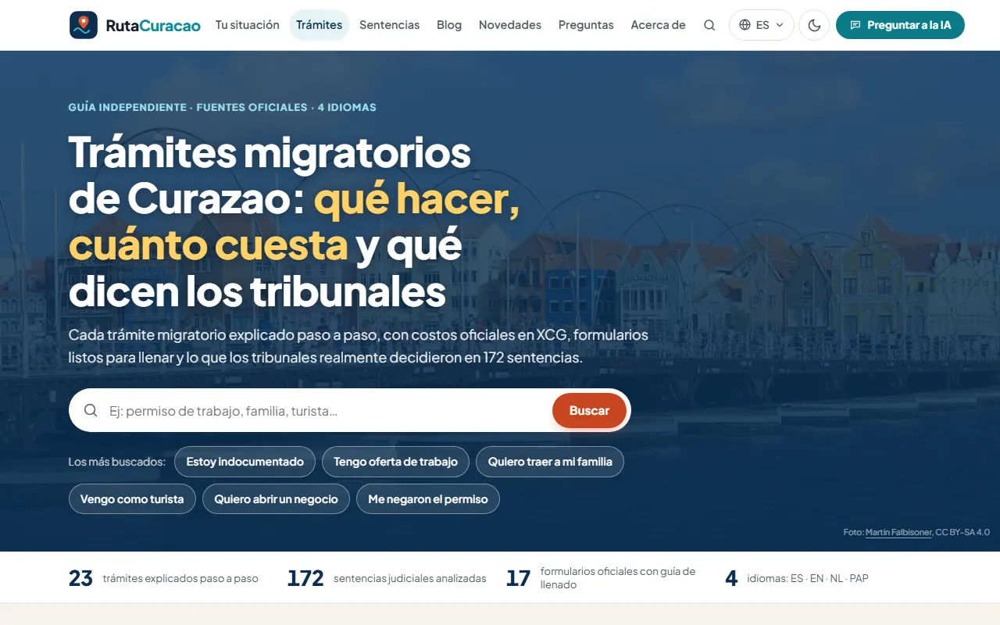
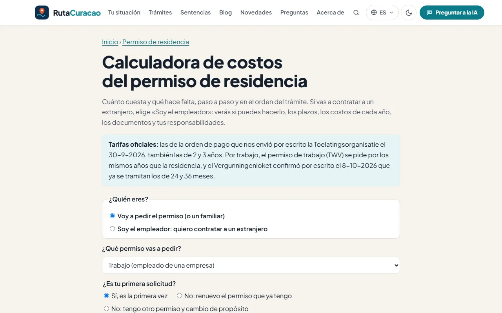
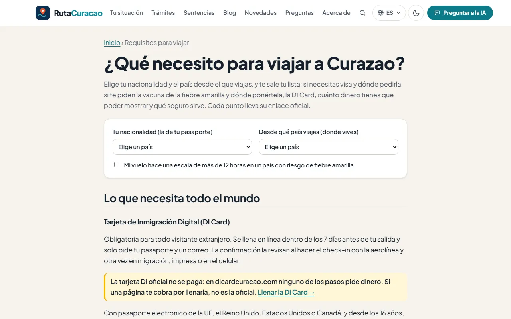

Fundador y desarrollador · 2026Founder & developer · 2026
RutaCuracao
Guías de trámites de migración de Curazao en español, inglés, neerlandés y papiamento, generadas con Python a partir de fuentes oficiales.
Curaçao immigration procedure guides in Spanish, English, Dutch and Papiamentu, generated with Python from official sources.
- Sitio estático generado desde datos en JSON, en 4 idiomas.
- Revisión semanal automática del sitio oficial de la Toelatingsorganisatie para detectar cambios.
- Análisis de 172 sentencias migratorias del Caribe neerlandés, leídas completas.
- Chat con IA, calculadora de costos y llenado de los formularios oficiales en el navegador.
- Funciones serverless en Vercel y automatizaciones con GitHub Actions.
- Static site generated from JSON data, in 4 languages.
- Automated weekly check of the official Toelatingsorganisatie website to detect changes.
- Analysis of 172 Dutch Caribbean immigration rulings, read in full.
- AI chat, cost calculator and in-browser filling of official forms.
- Serverless functions on Vercel and GitHub Actions automation.
- Python
- JavaScript
- Vercel
- GitHub Actions
- OpenAI API
- Pillow